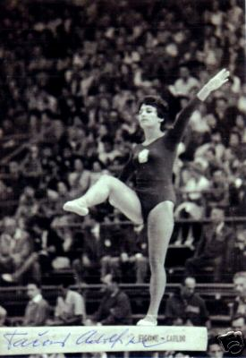

Adolfina Tkacikova (CSSR)
1960 and 1964 Olympic Team Silver Medalist

Medal Total
Olympic Games: 2
Silver
World Championships: 2 Silver
Competition Results
1958
World Championships: 2nd Team, 34th AA
1959
CSSR-GDR Dual Meet: 1st Team, 6th AA
1960
GDR-CSSR Dual Meet: 1st Team, 4th AA
Olympic Games: 2nd Team, 14th AA, 4th V
1962
World Championships: 2nd Team, 22nd AA
1964
Olympic Games: 2nd Team, 16th AA
USA-CSSR: 1st Team, 7th AA
1965
European Championships: 9th AA, 5th V, 5th UB, 6th FX
This page was created on May 20,
2006 and was last updated on July 08, 2006.
© Gymn Forum